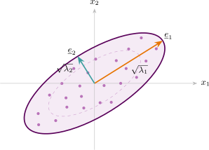

4.1 Population Principal Components
Let \(\underline {X} = (X_1,\dots ,X_p)'\) have covariance matrix \(\Sigma \). Consider a linear combination \(Y = \underline {a}'\underline {X}\), whose variance is \[\operatorname {var}(Y) = \underline {a}'\,\Sigma \,\underline {a}.\] Making \(\underline {a}\) larger makes this larger for trivial reasons, so the length of \(\underline {a}\) must be fixed; we require \(\underline {a}'\underline {a}=1\).
Definition 4.1 (Principal components). The first principal component is the linear combination \(Y_1 = \underline {a}_1'\underline {X}\) maximising \(\operatorname {var}(Y_1)\) subject to \(\underline {a}_1'\underline {a}_1 = 1\). The \(i\)th principal component is \(Y_i = \underline {a}_i'\underline {X}\) maximising \(\operatorname {var}(Y_i)\) subject to \(\underline {a}_i'\underline {a}_i = 1\) and \(\operatorname {cov}(Y_i, Y_k) = 0\) for all \(k<i\).
Theorem 4.2 (Principal components are the eigenvectors of \(\Sigma \)). Let \(\Sigma \) have eigenvalue–eigenvector pairs \((\lambda _1,\underline {e}_1),\dots ,(\lambda _p,\underline {e}_p)\) with \(\lambda _1\geq \lambda _2\geq \cdots \geq \lambda _p\geq 0\) and the \(\underline {e}_i\) orthonormal. Then the \(i\)th principal component is \[Y_i = \underline {e}_i'\,\underline {X},\] with \[\operatorname {var}(Y_i) = \lambda _i, \qquad \operatorname {cov}(Y_i,Y_k) = 0 \ \ (i\neq k).\]
Proof. By the spectral decomposition of Section 1.9, \(\Sigma = P\Lambda P'\) with \(P = (\underline {e}_1,\dots ,\underline {e}_p)\) orthogonal and \(\Lambda = \operatorname {diag}(\lambda _1,\dots ,\lambda _p)\). Put \(\underline {b} = P'\underline {a}\); then \(\underline {b}'\underline {b} = \underline {a}'PP'\underline {a} = \underline {a}'\underline {a} = 1\), and \[\underline {a}'\Sigma \underline {a} = \underline {a}'P\Lambda P'\underline {a} = \underline {b}'\Lambda \underline {b} = \sum ^{p}_{i=1}\lambda _i b_i^{2}.\] This is a weighted average of the \(\lambda _i\) with weights \(b_i^{2}\) summing to one, so it is at most \(\lambda _1\), with equality when \(b_1=1\) and all other \(b_i=0\) — that is, when \(\underline {a}=\underline {e}_1\). Hence \(\operatorname {var}(Y_1)=\lambda _1\) is attained at \(\underline {e}_1\).
For the \(i\)th component, the constraint \(\operatorname {cov}(Y_i,Y_k)=0\) for \(k<i\) forces \(b_1=\cdots =b_{i-1}=0\), and the same argument on the remaining coordinates gives the maximum \(\lambda _i\) at \(\underline {a}=\underline {e}_i\). Finally \(\operatorname {cov}(Y_i,Y_k)=\underline {e}_i'\Sigma \underline {e}_k =\lambda _k\underline {e}_i'\underline {e}_k = 0\) by orthonormality. □
Note 4.3. The components are uncorrelated by construction, which is the practical point. The original variables are entangled — each carries information the others also carry — while the components divide the same total variation into non-overlapping pieces. Nothing has been discarded at this stage: \(p\) variables have become \(p\) components, and the transformation is an orthogonal rotation of the coordinate axes onto the natural axes of the data.

Questions on this section
Stuck on something here? Ask below and it stays attached to this topic.